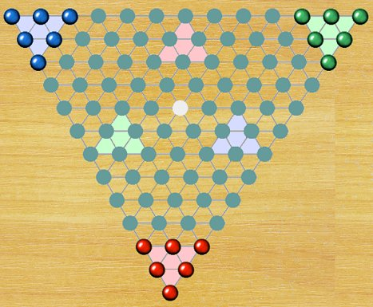

Ternion is an entertaining game belonging to the Chinese Checkers family. You must move your marbles into the opposite empty goal triangle before your opponents manage to fill their own. The game is won as soon as the opposite triangle is completely filled with marbles of any colour. (This solves the problem of opponents blocking your goal triangle.) It is not allowed to step into the enemy corners or the central square.
Players alternate turns, moving one marble at a time. A marble may slide to an adjacent empty space, or it may jump over an adjacent marble, of either colour, into the empty space directly on the opposite side. It may also jump across multiple empty spaces in a single leap, provided there is exactly one marble in the middle space of the jump. A marble may continue jumping as long as possible, or the player may choose to stop early. No marbles are ever captured in Ternion. There is also an alternative version with larger board.
The best strategy is to try and advance faster by chaining a series of jumps. This is better than sliding your marbles forward one space at a time. The most effective strategy is to arrange your marbles in a sequence that can be jumped over, creating a bridge toward the opposite side. Just be careful that your opponent doesn’t end up using these bridges more effectively than you do. Ternion is inspired by Trio, published by Adolf Sala Verlag between 1894 and 1898. It was the direct predecessor of Chinese Checkers, which appeared in the United States in 1928.
• You can download my free Ternion program here, but you must own the software Zillions of Games to be able to run it (I recommend the download version).
• See also Chinese Checkers.
© M. Winther, 2026 March